Home
Writing
Tags
About
Previous post
Next post
Back to top
Share post
初中三年。转身、回首Ⅰ
不落灰
2009-07-18
QQ空間
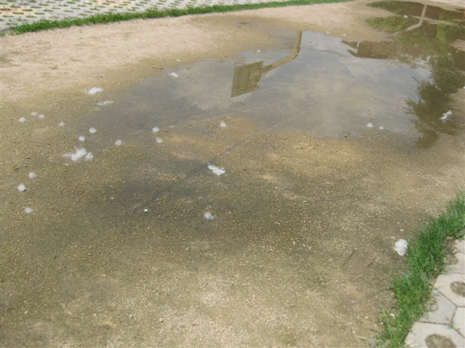
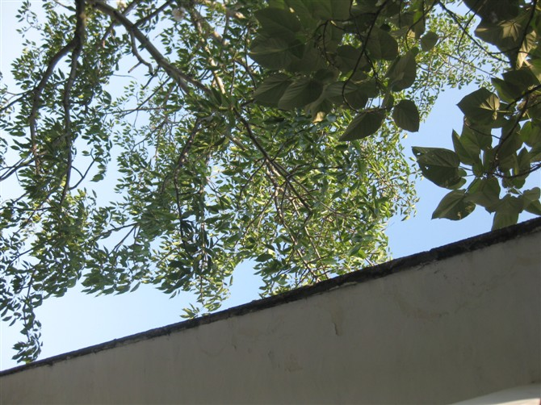
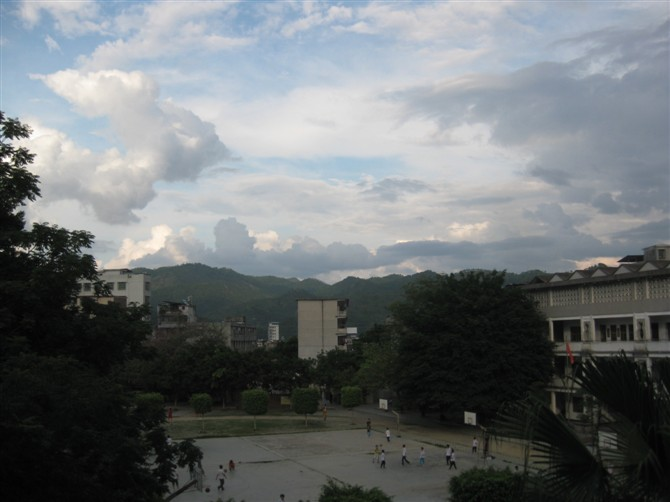
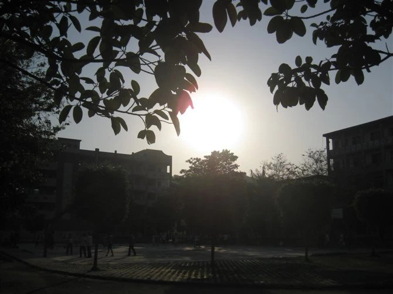
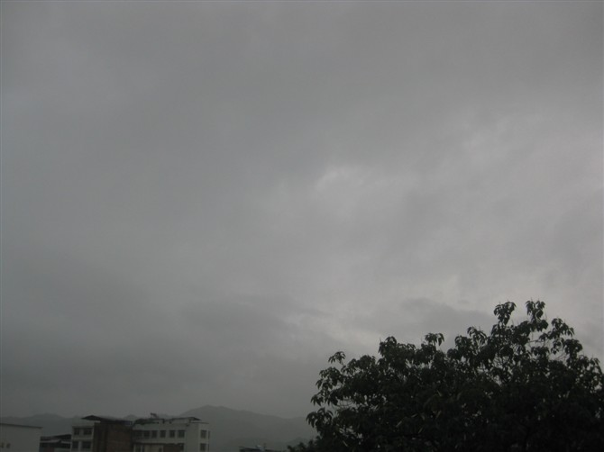
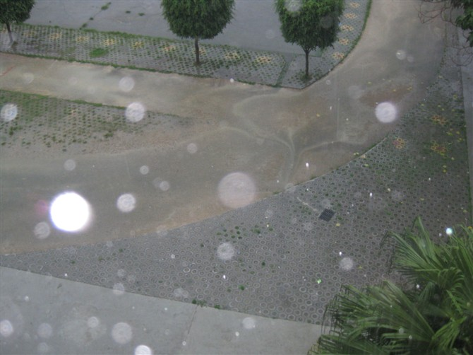
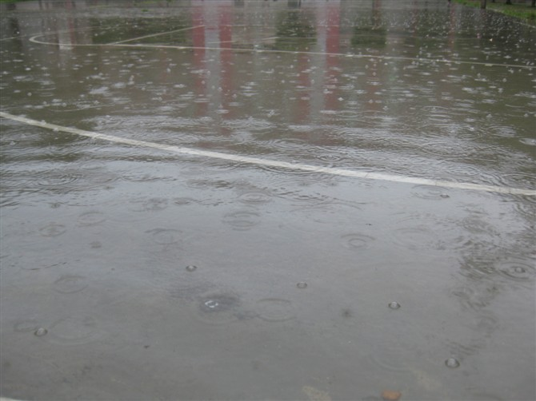
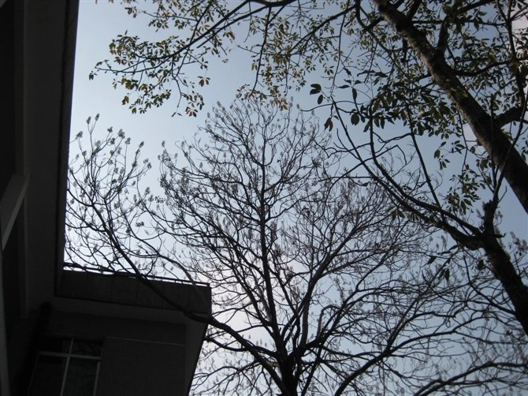
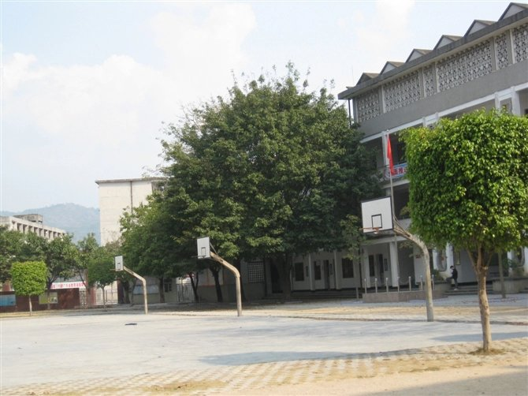
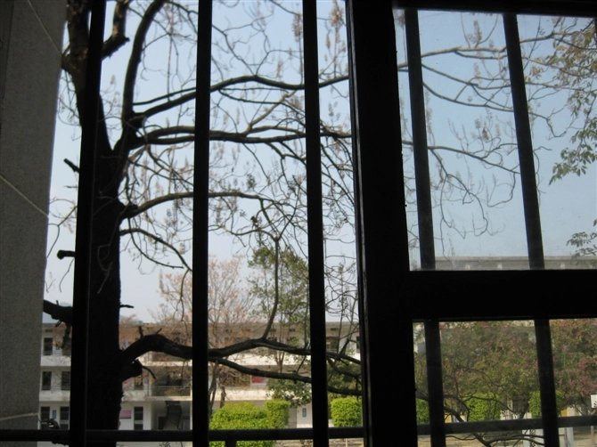
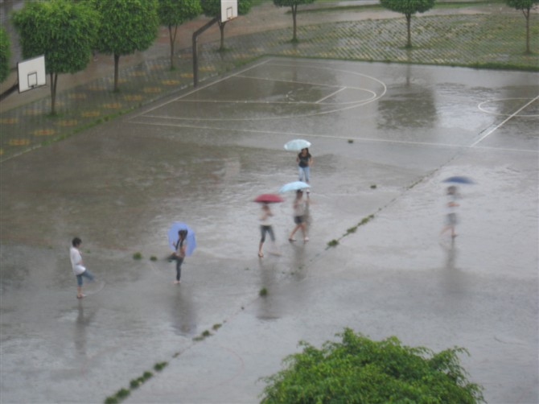
初一那年夏天，踏入一所还蛮烂的学校。如今，只剩照片祭奠着曾经。
Please enable JavaScript to view the
comments powered by Disqus.